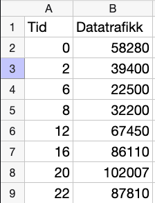
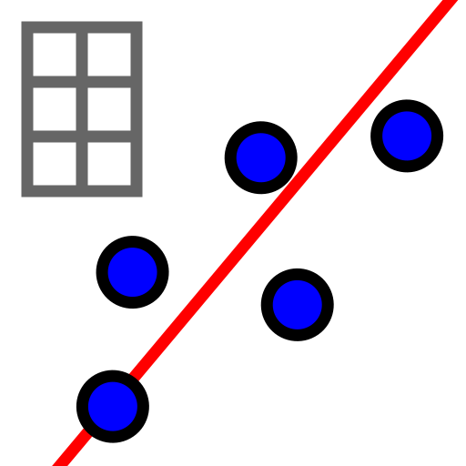
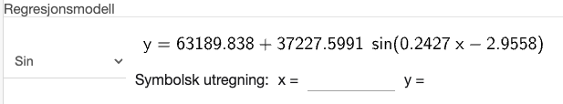
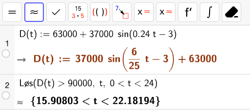
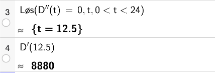
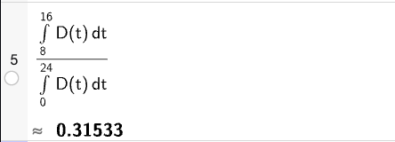
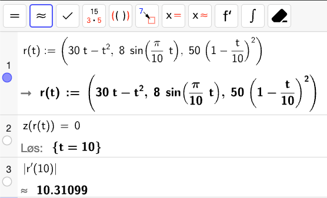
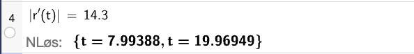
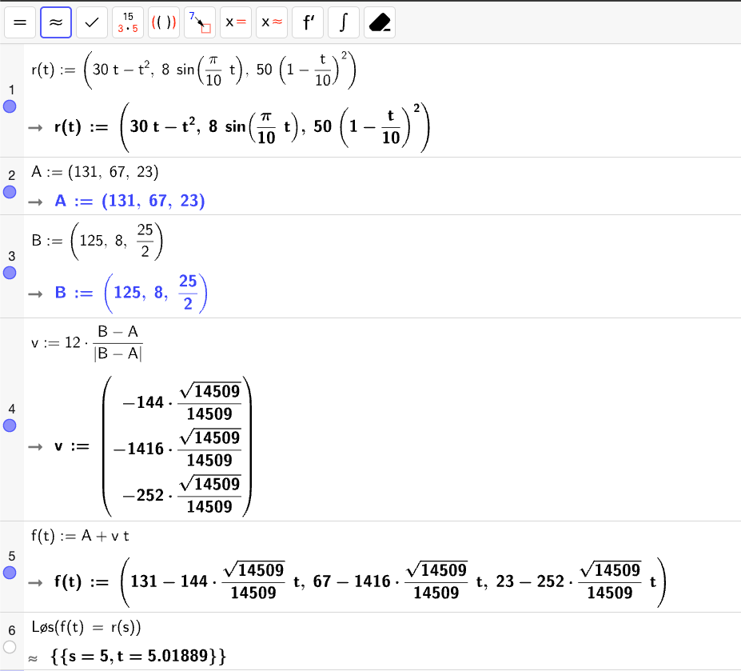
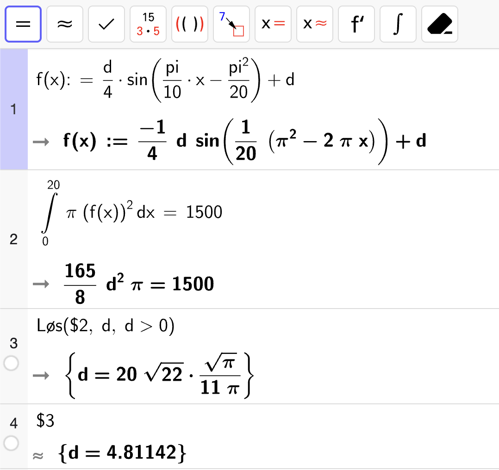

Eksamen vår 2026#
Del 1 – 3 timer – Uten hjelpemidler#
Oppgave 1 (4 poeng)
Bestem integralene.
Fasit
Løsning
Vi finner først en antiderivert til integranden:
der vi har valgt integrasjonskonstanten \(C = 0\) siden vi skal løse et bestemt integral. Da får vi at
og
Dermed er integralet gitt ved
Fasit
Løsning
Vi bruker substitusjon:
Vi setter inn dette i integralet:
Oppgave 2 (4 poeng)
Du får vite dette om en funksjon \(f\)
Funksjonen er definert for \(x > 0\)
\(f'(x) = \dfrac{2}{x^2}\)
Grafen til \(f\) går gjennom punktet \((2, 2)\)
Bestem \(f(x)\).
Fasit
Løsning
Fra analysens fundamentalteorem har vi at
Vi regner ut integralet på venstresiden:
Altså er
Vi vet at grafen til \(f\) går gjennom punktet \((2, 2)\) som gir
Altså er
To andre funksjoner, \(g\) og \(h\), er gitt ved \(g(x) = x\) og \(h(x) = -\dfrac{3}{x} + 4\) for \(x > 0\).
Finn arealet av området avgrenset av grafene til \(g\) og \(h\).
Fasit
Løsning
Vi finner først skjæringspunktene mellom grafene til \(g\) og \(h\) ved å løse likningen
Dette kan vi faktorisere videre som
Grafene skjærer hverandre altså når
Vi sjekker deretter hvilken av funksjonene som ligger øverst i intervallet \([1, 3]\) ved å regne ut \(g(2)\) og \(h(2)\):
Vi finner altså at
Det betyr at arealet av området avgrenset av grafene til \(g\) og \(h\) er gitt ved
Vi finner først en antiderivert til integranden:
Vi setter \(C = 0\) siden vi skal løse et bestemt integral. Da har vi at
og
Altså er arealet av området avgrenset av grafene til \(g\) og \(h\) gitt ved
Oppgave 3 (4 poeng)
Bestem \(\sin v\) og \(\tan v\) når \(\cos v = \dfrac{2}{3}\) og \(v\) er en vinkel i 4. kvadrant.
Fasit
Løsning
Fra Pytagoras’ identitet har vi at
Da får vi at
Siden vinkel \(v\) ligger i 4. kvadrant, følger det at \(\sin v < 0\). Dermed har vi at
Vi kan nå regne ut \(\tan v\):
Altså er
Løs likningen
Fasit
Løsning
Vi løser likningen generelt først:
Vi gjør et variableskifte med \(u = \dfrac{\pi}{3}x\) som gir oss likningen
Dette gir oss at
Vi setter tilbake for \(u\) og får at
Så deler vi med \(\pi/3\) og får at
Nå må vi finne løsningene \(x \in \langle 0, 10 \rangle\). Vi starter med den første løsningen:
| $k$ | $x = \dfrac{1}{2} + 6k$ |
|---|---|
| 0 | $\dfrac{1}{2}$ |
| 1 | $\dfrac{13}{2}$ |
Resten av løsningene vil ligge utenfor intervallet. Så ser vi på den andre løsningen:
| $k$ | $x = -\dfrac{1}{2} + 6k$ |
|---|---|
| 1 | $\dfrac{11}{2}$ |
Det betyr at løsningen av likningen er
Oppgave 4 (2 poeng)
I koordinatsystemet nedenfor ser du grafen til en funksjon \(f\).
Bestem et mulig funksjonsuttrykk \(f(x)\).
Fasit
Løsning
Vi starter med et generelt uttrykk for funksjonen gitt ved
Amplituden \(A\) er gitt ved
Likevektslinja \(d\) er gitt ved gjennomsnittet av \(y_{\max}\) og \(y_{\min}\):
Vinkelfrekvensen \(\omega\) er gitt ved
der \(T\) er perioden. Perioden kan vi lese av er \(T = \pi\) som betyr at
Nå har vi at
Fra grafen til \(f\) kan vi se at \(f(0) = -3\) som gir oss likningen
Da får vi at en mulig verdi for \(\varphi\) er
Ergo er et mulig funksjonsuttrykk for \(f(x)\) gitt ved
Oppgave 5 (2 poeng)
I koordinatsystemet ovenfor ser du grafen til funksjonen \(f\) gitt ved
Et omdreiningslegeme framkommer ved at grafen til \(f\) fra \(x = 1\) til \(x = 3\), dreies \(360\degree\) rundt førsteaksen.
Regn ut volumet til omdreiningslegemet.
Fasit
Løsning
Volumet av omdreiningslegemet er gitt ved
Vi bruker substitusjon som gir
De nye integrasjonsgrensene blir
Dermed er volumet av omdreningslegemet gitt ved
Oppgave 6 (4 poeng)
I et kunstprosjekt skal Selma bygge et stort tårn ved å legge kvadratiske treplater oppå hverandre. Hun starter med en treplate med sidelengde \(5~\mathrm{m}\).
Når hun bygger videre, skal sidelengden til hver ny treplate være \(0.1~\mathrm{m}\) kortere enn sidelengden til treplaten under.
Sett opp en aritmetisk rekke som viser summen av sidelengdene til treplatene i tårnet.
Hvor mange treplater kan det maksimalt bli i tårnet til Selma?
Fasit
- Rekke
\(S = 4\cdot \left(5 + 4.9 + 4.8 + \ldots + 0.1\right)\)
- Maks antall ledd
\(n = 50\)
Løsning
Vi har at startverdien til rekka er \(a_1 = 5\) og at differansen er \(d = -0.1\). Rekka vil derfor være gitt ved
der den minste plata vil ha sidelengde \(0.1~\mathrm{m}\). Formelen for det \(n\)-te leddet i en aritmetisk rekke er gitt ved
Dette gir oss
Det siste leddet må være \(0.1\) som gir oss likningen
Altså kan det maksimalt bli \(50\) treplater i tårnet til Selma.
Vilfred skal bygge et annet stort tårn ved å legge kvadratiske treplater oppå hverandre. Han starter med en treplate som har areal \(19~\mathrm{m}^2\).
Når han bygger videre, skal sidelengden til hver ny treplate være \(10~\%\) kortere enn sidelengden til treplaten under.
Hvor stort kan det samlede arealet av platene bli i tårnet til Vilfred?
Fasit
\(100~\mathrm{m}^2\)
Løsning
Vi har at startverdien til rekka er \(a_1 = 19\). Siden sidelengden til hver ny plate er \(10~\%\) kortere enn sidelengden til treplaten under, vil kvotienten i rekka være
Rekka vil derfor være gitt ved
Vi ser at dette er en uendelig geometrisk rekke med startverdi \(a_1 = 19\) og kvotient \(k = 0.81\). Summen av en uendelig geometrisk rekke er gitt ved formelen
Dette gir oss
Altså vil det samlede arealet av platene i tårnet til Vilfred kunne bli \(100~\mathrm{m}^2\).
Oppgave 7 (7 poeng)
Et plan \(\alpha\) er gitt ved likningen
Punktene \(A(1, 2, 1)\), \(B(2, 0, -2)\) og \(C(-1, 2, 2)\) ligger i planet.
Avgjør om punktet \(D(3, 1, -1)\) ligger i planet \(\alpha\).
Fasit
Nei.
Løsning
Vi setter inn \((x, y, z) = (3, 1, -1)\) i planlikningen og ser om den er tilfredsstilt:
Altså er ikke likningen tilfredsstilt som betyr at punktet \(D\) ikke ligger i planet \(\alpha\).
Bruk kryssprodukt til å vise at \([2, -5, 4]\) er en normalvektor til planet.
Løsning
En mulig normalvektor til planet vil være \(\lvec{AB} \times \lvec{AC}\). Vi regner ut de to vektorene først:
Deretter regner vi ut kryssproduktet:
Altså får vi en vektor som er antiparallell med \([2, -5, 4]\) som betyr at \([2, -5, 4]\) er en normalvektor til planet \(\alpha\).
En kule tangerer planet \(\alpha\) i et punkt \(P\).
Kuleflaten er gitt ved likningen
Vis at punktet \((0, 9, -1)\) er sentrum i kulen.
Løsning
Generelt er likningen til en kule gitt ved med sentrum \((x_0, y_0, z_0)\) og radius \(r\) gitt ved
Vi fullfører kvadratene i likningen for å lese av hva sentrum i sirkelen er. Vi har at
og
Altså får vi at likningen blir
Ved avlesning finner vi derfor at sentrum i kulen er gitt ved \((x_0, y_0, z_0) = (0, 9, -1)\).
Bestem en parameterframstilling for linjen som går gjennom sentrum i kulen og punktet \(P\)
Fasit
Løsning
Siden planet \(\alpha\) tangerer kulen, vil normalvektoren \(\vec{n}_\alpha\) til \(\alpha\) være en retningsvektor til linja gjennom sentrum \(S\) og tangeringspunktet \(P\). Dermed vil en parameterframstilling for linja være gitt ved
Bestem konstanten \(k\) i likningen for kuleflaten.
Fasit
Løsning
Fra oppgave c har vi at radius til kula tilfredsstiller:
Vi finner koordinatene til tangeringspunktet \(P\) ved å sette inn koordinatene til \(\vec{r}(t)\) i likningen for planet \(\alpha\):
så løser vi for \(t\):
Altså vil koordinatene til tangeringspunktet være
Vektoren som peker fra sentrum \(S\) til tangeringspunktet \(P\) er da gitt ved
Radius i kula tilfredsstiller da at
Vi har at
Altså får vi at
Altså må
Oppgave 8 (3 poeng)
Påstand
Dersom to vektorer \(\vec{p}\) og \(\vec{q}\) er ortogonale, er \(\abs{\vec{p} + \vec{q}}^2 = \abs{\vec{p}}^2 + \abs{\vec{q}}^2\).
En elev prøver å bevise påstanden ovenfor.
Elevens bevis
Da er
og
Altså er påstanden riktig.
Forklar hvorfor dette ikke er et gyldig matematisk bevis for påstanden.
Løsning
Elevens bevis tar utgangspunkt i ett eksempel. Dette er ikke nok til å bevise påstanden. Det kan tenkes at det finnes moteksempler der påstanden ikke er riktig, og ett eksempel er ikke nok til å utelukke dette. For at beviset skal være gyldig, må det vise at påstanden er riktig for alle ortogonale vektorer, og ikke bare for ett spesifikt eksempel.
Bevis påstanden ved hjelp av vektorregning.
Løsning
La \(\vec{p}\) og \(\vec{q}\) være ortogonale vektorer. Da har vi at
Videre har vi at
Den eneste måten vi kan få at
er dersom \(\vec{p} \cdot \vec{q} = 0\). Dette skjer dersom de to vektorene er ortogonale.
Ergo er påstanden sann.
Del 2 – 2 timer – Med hjelpemidler#
Oppgave 1 (6 poeng)
Selskapet IntCom er en internettleverandør. Selskapet sørger for overføring av data mellom kundene og internett. Datatrafikken varierer gjennom døgnet.
Tabellen nedenfor viser datatrafikken (gigabit per time) et døgn i mai.
| Tidspunkt (klokkeslett) | 00:00 | 02:00 | 06:00 | 08:00 | 12:00 | 16:00 | 20:00 | 22:00 |
|---|---|---|---|---|---|---|---|---|
| Datatrafikk (gigabit per time) | $58~280$ | $39~400$ | $22~550$ | $32~200$ | $67~450$ | $86~110$ | $102~007$ | $87~810$ |
Lag en god modell for datatrafikken \(S(t)\) gigabit per time, \(t\) timer etter midnatt dette døgnet.
Løsning
Vi bruker regresjon med en modell på formen
Først legger vi inn datapunktene i et regneark:
{kind=link}

så bruker vi

og velger en sinusmodell. Da får vi:{kind=link}

En god modell for datatrafikken er derfor gitt ved
Videre i oppgaven skal du bruke modellen
for datatrafikken \(D(t)\), \(t\) timer etter midnatt dette døgnet.
Når var datatrafikken ut fra selskapet mer enn \(90~000\) gigabit per time ifølge modellen?
Fasit
Mellom klokken 16 og 22.
Løsning
Vi løser ulikheten \(D(t) > 90~000\) for \(t \in \langle 0, 24\rangle\) med CAS:
{kind=link}

Altså er datatrafikken fra selskapet mer enn \(90~000\) gigabit per time for \(t \in \langle 15.9, 22.2\rangle\) som vil si ca. mellom klokken 16 og klokken 22.
Når økte datatrafikken raskest, og hvor stor var denne økningen ifølge modellen?
Fasit
Når klokken er ca. 12:30 øker datatrafikken raskest. Da øker den med ca. \(8~880\) gigabit per time per time.
Løsning
Datatrafikken øker raskest når \(D(t)'' = 0\) og \(D'(t) > 0\). Vi løser den første likningen med CAS og sjekker at den deriverte er positiv:
{kind=link}

Når klokken er ca. 12:30 øker datatrafikken raskest. Da øker den med ca. \(8~880\) gigabit per time per time.
Hvor stor del av den totale datamengden som IntCom overførte dette døgnet, ble overført i løpet av arbeidsdagen, det vil si mellom klokken 8 og klokken 16, ifølge modellen?
Fasit
Ca. \(31.5~\%\).
Løsning
Den totale datamengden som overføres i løpet av hele døgnet kan tilnærmes som
Datatrafikken i løpet av arbeidsdagen er derimot tilnærmet gitt ved
Vi regner ut forholdet mellom de to med CAS:
{kind=link}

Altså blir omtrent \(31.5~\%\) av den totale datamengden overført i løpet av arbeidsdagen.
Oppgave 2 (4 poeng)
Leddene i en uendelige rekke er gitt ved den rekursive sammenhengen
Lag et program som skriver ut de 6 første leddene i rekken dersom \(a_1 = 5\).
Løsning
Et mulig program som løser oppgaven er
1a = 5
2n = 1
3while n <= 6:
4 print(a)
5 a = (a - 1)**2
6 n = n + 1
som gir utskriften
5
16
225
50176
2517530625
6337960442777829376
Avgjør om det finnes et heltall \(a_1\) som gjør at rekken blir konvergent.
Løsning
Rekka \(S\) er gitt ved
Dersom \(a_1 = 0\), så vil vi få at
og dette vil gjenta seg slik at
som betyr at rekka ikke konvergerer.
Dersom \(a_1 = 1\), så vil vi få at
og dette vil gjenta seg slik at
som betyr at rekka ikke konvergerer.
Dersom \(a_1 = 2\), så vil vi få at
som betyr at rekka vil oppføre seg som i det første tilfellet og dermed ikke konvergere.
Dersom \(\abs{a_1} \gt 2\), så vil vi får at
Dermed vil \(a_n\) vokse uten begrensning som betyr at rekka heller ikke konvergerer.
Dermed finnes det ikke et heltall \(a_1\) som gjør at rekken blir konvergent.
Oppgave 3 (6 poeng)
{kind=link}
Et lite propellfly må nødlande på en motorvei. Posisjonen \(\vec{r}(t)\) til flyet \(t\) sekunder etter at nødlandingen har startet, er gitt ved
Motorveien ligger i \(xy\)-planet. Enhetene langs aksene er meter.
Hvor høyt over motorveien er flyet \(4\) sekunder etter at nødlandingen har startet?
Fasit
\(18\) meter.
Løsning
Høyden over motorveien vil være gitt ved \(z(4)\) som er
Altså er flyet \(18~\mathrm{m}\) over motorveien \(4\) sekunder etter at nødlandingen har startet.
Bestem banefarten idet flyet lander på motorveien.
Banefart er lengden av fartsvektoren.
Fasit
\(10.3~\mathrm{m/s}\).
Løsning
Vi må først finne ved hvilket tidspunkt flyet lander på motorveien ved å løse \(z(t) = 0\). Deretter regner vi ut banefarten \(\abs{\vec{r}'(t)}\) ved dette tidspunktet. Vi gjør dette med CAS:
{kind=link}

Altså finner vi at flyet har en banefart på \(10.3~\mathrm{m/s}\) idet det lander på motorveien.
Ved hvilket tidspunkt under nødlandingen er banefarten \(14.3~\mathrm{m/s}\)?
Fasit
Ca. \(8\) sekunder etter at nødlandingen startet.
Løsning
Vi løser likningen \(\abs{\vec{r}'(t)} = 14.3\) med CAS:
{kind=link}

I oppgave b fant vi at flyet lander når \(t = 10\), så det må bety at banefarten til flyet er \(14.3~\mathrm{m/s}\) når \(t \approx 8\) sekunder etter at nødlandingen har startet.
En fugl er i posisjonen \((131, 67, 23)\) idet flyet starter nødlandingen. Fuglen flyr i en rett linje og krysser banen til flyet i punktet \(\left(125, 8, \dfrac{25}{2}\right)\).
Fuglen holder en jevn banefart på \(12~\mathrm{m/s}\).
Vil fuglen treffe flyet?
Fasit
Ja!
Løsning
Vi lar \(\lvec{OA} = [131, 67, 23]\) være startposisjonen til fuglen. Flyet og fuglen kan møtes i \(\lvec{OB} = \left[125, 8, \dfrac{25}{2}\right]\). Vi finner derfor først en retningsvektor
Fartsvektoren til fuglen vil da være gitt ved
Da er posisjonsvektoren til fuglen er gitt ved
Vi bare sjekker om de to vektorene \(\vec{r}(t)\) og \(\vec{f}(t)\) er like for én \(t \in \langle 0, 10\rangle\) med CAS:
{kind=link}

Både fuglen og flyet er i skjæringspunktet mellom kurvene sine omtrent ved \(t = 5\) sekunder som betyr at fuglen vil treffe flyet.
Merk at selv om fuglen er i punktet 0.02 sekunder senere, så vil det i praksis bety at fuglen og flyet treffer hverandre siden det er så liten tidsforskjell.
Oppgave 4 (3 poeng)
Du får i oppdrag å lage en vase med form som på bildet nedenfor.
Vasen skal romme omtrent \(1.5~\mathrm{L}\) vann og ha høyde \(20~\mathrm{cm}\).
{kind=link}
Bruk det du kan om omdreiningslegemer og trigonometri, til å lage en funksjon på formen
som ved omdreining gir en vase med denne formen.
Tegn grafen til funksjonen i et koordinatsystem der enhetene langs aksene er centimeter.
Husk å begrunne ditt valg av parameterne \(A\), \(c\), \(\varphi\) og \(d\), og la funksjonsuttrykket komme tydelig fram i besvarelsen din.
Løsning
Vi forestiller oss at vi skal dreie en sinusfunksjon om førsteaksen som vist nedenfor.
Vi setter først perioden \(T = 20\) siden den skal være \(20~\mathrm{cm}\) høy. Da får vi at
Siden det skal være en sinusfunksjon, er det rimelig å la faseforskyvningen være \(-\pi/2\) så vi får en funksjon som starter og slutter på likevektslinja si. Da blir vasen like bred på bunnen og toppen. Altså må
Amplituden \(A < d\) for at vi skal få en vase som ikke skjærer \(x\)-aksen. Valget her er ganske fritt, så vi setter \(A = \dfrac{d}{4}\) for å få en vase som svinger relativt lite i forhold til likevektslinja si. Nå trenger vi bare å kreve at
siden \(1.5~\mathrm{L} = 1500~\mathrm{cm}^3\). Vi løser denne likningen for \(d\) med CAS:
{kind=link}

Altså blir funksjonsuttrykket som skal dreies om førsteaksen for å lage vasen gitt ved
Grafen til \(f\) er vist i figuren nedenfor.